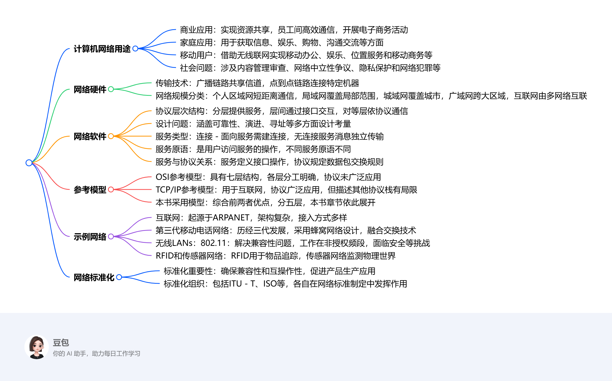
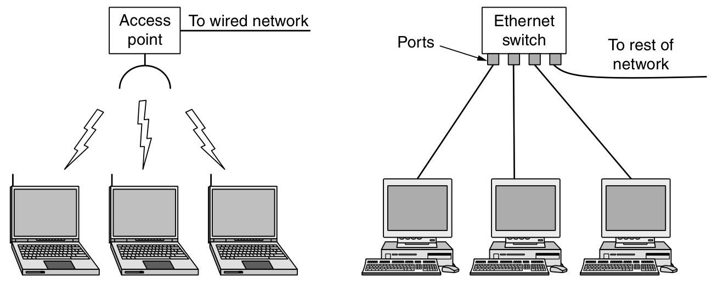
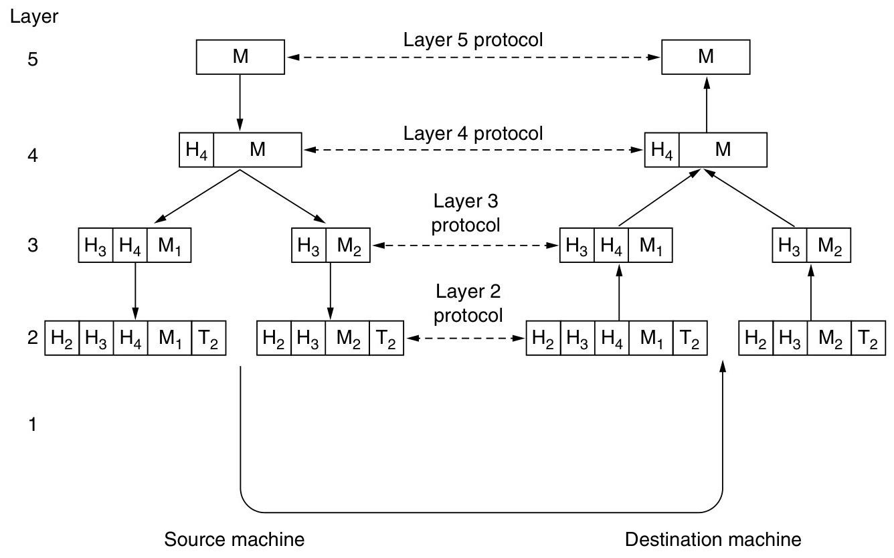

1 INTRODUCTION¶
- 计算机网络的用途
- 商业应用：公司借助计算机网络实现资源共享，如员工共享打印机、数据库等，通过客户端 - 服务器模型访问远程数据。同时，网络促进了员工间的通信，如电子邮件、IP电话等，还支持电子商务活动，如在线销售和采购。
- 家庭应用：人们利用网络获取各类信息，进行娱乐活动，如观看视频、听音乐等，还可通过网络购物、进行电子支付。此外，网络也方便了人与人之间的沟通，如电子邮件、即时通讯等。
- 移动用户：移动设备通过无线联网实现多种功能，如移动办公、在线娱乐等。无线热点和蜂窝网络为移动设备提供网络连接，位置相关服务基于移动设备的定位功能实现，移动商务也逐渐兴起。
- 社会问题：计算机网络带来了诸多社会问题，如网络内容的管理和审查、网络中立性的争议、隐私保护以及网络犯罪等。不同国家和地区对这些问题的法律规定和处理方式存在差异。
- 网络硬件
- 传输技术：分为广播链路和点到点链路。广播链路中，多台机器共享通信信道，通过地址字段确定接收方；点到点链路则是连接两台特定机器，信息传输可能需经过多个中间节点。
- 网络规模分类：个人区域网用于个人设备间的短距离通信；局域网覆盖范围较小，常用于连接办公室或家庭中的设备；城域网覆盖城市范围；广域网跨越较大地理区域；互联网则是由多个网络互联而成。
- 网络软件
- 协议层次结构：为降低设计复杂度，多数网络采用分层结构，每一层为上层提供服务，并隐藏服务实现细节。层与层之间通过接口进行交互，不同机器上的对应层遵循特定协议进行通信。
- 设计问题：涉及可靠性、网络演进、寻址、网络互联、可扩展性、资源分配、流量控制、服务质量和安全性等方面。
- 服务类型：连接 - 面向服务类似电话系统，需先建立连接再传输数据；无连接服务则像邮政系统，每个消息独立传输。两种服务类型各有其适用场景，且都可进一步分为可靠和不可靠服务。
- 服务原语：是用户进程访问服务的操作，不同类型的服务具有不同的原语。例如，面向连接的可靠字节流服务可能包含LISTEN、CONNECT等原语。
- 服务与协议的关系：服务定义了层与层之间的接口操作，而协议规定了对等实体间交换数据包的规则，二者相互独立又协同工作。
- 参考模型
- OSI参考模型：有七层结构，从物理层到应用层，各层功能明确，如物理层负责传输原始比特流，数据链路层处理传输错误等，但该模型的协议在实际中未被广泛应用。
- TCP/IP参考模型：是互联网采用的模型，包含链路层、网络层、传输层和应用层，其协议得到了广泛应用，但模型本身在描述其他协议栈时存在一定局限性。
- 本书采用的模型：综合了OSI和TCP/IP模型的优点，分为物理层、链路层、网络层、传输层和应用层，各层分工明确，本书章节顺序以此模型为基础展开。
- 示例网络
- 互联网：起源于ARPANET，经历了多个发展阶段，如今已成为全球最大的网络。其架构包括ISP网络、IXP等，网络接入方式多样，数据传输依赖于各种协议和技术。
- 第三代移动电话网络：发展历经三代，从模拟语音到数字语音和数据传输。采用蜂窝网络设计，核心网络融合了电路交换和分组交换技术，同时注重安全和隐私保护。
- 无线LANs：802.11：为解决无线设备联网兼容性问题而制定的标准。工作在非授权频段，采用多种技术提高传输速率和抗干扰能力，同时面临着安全和移动性等方面的挑战。
- RFID和传感器网络：RFID使日常物品可接入网络，用于物品追踪等；传感器网络用于监测物理世界，由众多传感器节点组成，节点间通过自组织方式进行通信。
- 网络标准化
- 标准化的重要性：网络标准化确保不同设备和系统间的兼容性和互操作性，促进产品的大规模生产和应用。标准分为事实标准和法定标准，前者如HTTP，后者由正式标准化组织制定。
- 标准化组织：包括ITU-T、ISO、IEEE和IAB等，它们在不同领域和层面推动网络标准的制定和发展，各自发挥着重要作用 。 
Computer Networks（计算机网络）和Distributed system（分布式系统）有明显区别但也存在重叠，具体对比如下：
- 定义与表现形式：
- 计算机网络：是由单一技术互联的自治计算机集合，用户直接接触实际机器。若机器硬件和操作系统不同，用户能明显感知。例如用户想在远程机器上运行程序，需登录该机器进行操作。
- 分布式系统：是在用户看来像单个连贯系统的独立计算机集合，通常基于单一模型或范式，由操作系统之上的中间件实现。如万维网，运行在互联网之上，向用户呈现的模型中所有内容都类似文档（网页）。
- 软件层面差异：分布式系统是构建于网络之上的软件系统，其软件赋予系统高度的内聚性和透明性，用户无需关注底层实现细节；而计算机网络本身不具备这种统一的软件层面的连贯性和模型，软件层面相对分散。所以二者的区别主要在于软件（尤其是操作系统），而非硬件。
- 功能重叠与区别：在文件传输等功能上，二者存在重叠。但在文件传输的调用主体上有区别，计算机网络中文件传输通常由用户发起；而分布式系统中，系统会基于自身的逻辑和需求来调用文件传输，对用户而言相对透明。
Network Hardware¶
Transmission Technology and Scale¶
- Unicasting（单播）：可用于点到点网络和广播网络，是从一个发送方到一个特定接收方的通信方式，像两台计算机间的文件传输。
- Broadcasting（广播）：属于广播网络，一个发送方的数据包会被网络中所有机器接收，如局域网内的通知消息发送。
- Multicasting（多播）：通常用于广播网络，发送方将数据包发给多播组内所有成员，如在线直播数据发送。
- Anycasting（任播）：在广播网络和点到点网络都能实现，把数据包发送给一组接收方中的任意一个，如CDN中请求被发送到最近的服务器。
Classification by Scale¶
| Interprocessor distance | Processors located in same | Example Personal area network |
|---|---|---|
| 1 m | Square meter | |
| 10 m | Room | |
| 100 m | Building | Local area network |
| 1 km | Campus | |
| 10 km | City | Metropolitan area network |
| 100 km | Country | |
| 1000 km | Continent | Wide area network |
| 10,000 km | Planet | The Internet |
Personal Area Networks（PAN）¶
这段内容主要介绍了个人区域网（PANs），并以蓝牙技术为例展开说明，具体如下：
- 个人区域网（PANs）概述：PANs允许设备在个人范围内进行通信，常见例子是连接计算机及其外围设备的无线网络。由于连接计算机和外围设备的线缆安装繁琐，一些公司共同设计了蓝牙这种短距离无线网络来解决该问题。
- 蓝牙（Bluetooth）：
- 产生背景：为帮助新用户摆脱寻找和连接线缆的困扰，一些公司设计了蓝牙技术。其优势在于设备具备蓝牙功能时，无需线缆连接，操作便捷，开启设备即可协同工作。
- 应用场景：除连接计算机及其外围设备外，还常用于无线连接手机和耳机，让数字音乐播放器与汽车连接，以及实现嵌入式医疗设备（如起搏器、胰岛素泵、助听器）与用户操作的遥控器之间的通信。
- 主从模式（Master-slave paradigm）：这是蓝牙网络的一种基本架构模式。在该模式下，系统单元（如个人电脑PC）通常作为主设备，鼠标、键盘等则作为从设备。主设备负责控制从设备的运行参数，如告知从设备使用的地址、允许广播的时间、传输时长以及可用频率等 。
- 其他构建PANs的技术：除蓝牙外，像智能卡和图书馆书籍上使用的RFID（射频识别）技术，也能用于构建个人区域网，相关内容将在第4章详细学习。
Lacal Area Networks (LAN)¶
这段内容主要围绕局域网（LAN）展开，包括LAN的定义、分类、传输技术、拓扑结构，以及家庭局域网的相关特点和发展趋势，同时介绍了网络信道的静态和动态分配方式，具体如下： 
- 局域网（LAN）概述：
- 定义与用途：LAN是在家庭、办公室或工厂等单个建筑物内部及周边使用的私有网络，用于连接个人计算机和消费电子产品，实现资源共享和信息交换，企业使用的LAN也叫企业网络。
- 分类：分为无线局域网和有线局域网。
- 无线局域网：如今非常流行，尤其在难以安装线缆的场所。计算机通过无线调制解调器和天线通信，多数情况下与接入点（AP）设备交互，AP负责在无线计算机之间以及它们与互联网之间转发数据包。计算机距离较近时也可直接进行对等通信。IEEE 802.11（WiFi）是无线局域网的标准，速度范围为11Mbps到数百Mbps。
- 有线局域网：使用多种传输技术，多数用铜线，部分使用光纤。其传输速度通常在100Mbps到1Gbps，延迟低、错误少，新型有线局域网速度可达10Gbps。在性能方面优于无线网络。
- 有线局域网的拓扑结构：
- 以太网（Ethernet）：IEEE 802.3以太网是最常见的有线局域网类型，采用点到点链路连接计算机和交换机，交换机依据数据包地址转发数据。多个交换机可级联构建更大的LAN，即便连接成环，协议也能确保数据包正确传输。
- 虚拟局域网（VLAN）：可将一个大型物理LAN划分为多个较小的逻辑LAN，通过给端口打标签实现不同逻辑LAN间的隔离，比如工程部门和财务部门的计算机可通过VLAN实现逻辑上的分离管理。
- 经典以太网：是交换式以太网的前身，通过单一线性电缆广播数据包，同一时间最多只有一台机器能成功传输，采用分布式仲裁机制解决冲突，即计算机在电缆空闲时传输，若发生冲突则随机等待后重试。
- 家庭局域网：未来家庭中的所有电器可能都能联网并通过互联网访问，但它与其他网络相比有不同特性，包括设备安装要简单、操作要傻瓜式、价格要低、可扩展性强、安全可靠等。家庭局域网在选择有线还是无线连接上存在争议，也可考虑利用家庭现有的电线网络，但面临同时传输电力和数据信号的难题，不过可通过使用不同频段来解决。
- 网络信道分配方式：
- 典型的静态分配（A typical static allocation）：将时间划分为离散的间隔，采用循环算法，让每台机器仅在其时间槽到来时进行广播。这种方式在机器无数据发送时会浪费信道容量，因此多数系统倾向于动态分配。
- 动态分配方式（Dynamic allocation methods）：分为集中式和分散式。集中式分配由一个实体（如蜂窝网络中的基站）决定下一个传输者，它可以接收多个数据包并依据内部算法确定优先级；分散式分配则没有中央实体，每台机器自行决定是否传输，虽然看似可能引发混乱，但实际上有专门算法维持秩序。
MAN and WAN¶
广域网（WAN）相关内容总结¶
- WAN的定义与组成：广域网跨越很大的地理区域，通常覆盖一个国家或大洲。其由通信子网和主机组成，通信子网又包含传输线路和交换元件（如路由器），传输线路用于在机器间传输比特，交换元件负责在数据到达时选择输出线路进行转发。
- WAN与LAN的区别：
- 所有权不同：WAN中主机和子网通常由不同人拥有和运营；而LAN一般是企业或个人在有限区域内构建和使用，所有权相对集中。
- 连接技术不同：WAN的路由器常连接不同类型的网络技术，如办公室内部是交换以太网，长距离传输可能用SONET链路；LAN通常使用较为单一的技术，如以太网。
- 连接对象不同：WAN连接的既可以是单个计算机，也可以是整个LAN；LAN主要连接区域内的各种设备。
- WAN的其他类型：
- 虚拟专用网络（VPN）：公司不租赁专用传输线路，而是通过互联网连接各办公室，形成虚拟链路。其优点是资源复用灵活，如添加新办公室较为容易；缺点是对底层资源缺乏控制，网络性能依赖互联网服务质量。
- 由网络服务提供商（ISP）运营的WAN：子网由ISP运营，办公室作为客户接入。ISP除连接客户网络外，还连接其他网络以提供完整的互联网服务。
- 相关关键问题：在WAN中，当两个不直接相连的路由器通信时，需要通过其他路由器间接进行。网络选择路径的方式涉及路由算法，每个路由器决定下一跳转发的方式涉及转发算法，这些将在第5章详细学习。
- 使用无线技术的WAN：
- 卫星系统：地面计算机通过天线与卫星进行数据传输，卫星网络具有广播特性，适用于需要广播功能的场景。
- 蜂窝电话网络：已历经三代，正向第四代发展。第一代是模拟语音，第二代是数字语音，第三代是数字语音和数据。其基站覆盖范围比无线LAN大，数据速率通常在1Mbps左右，低于无线LAN（可达100Mbps左右）。
WAN拓扑结构中的子网、LAN、Host内容¶
| 项目 | 描述 |
|---|---|
| 子网（Subnet） | 由传输线路和交换元件（如路由器）组成，负责在主机之间传输消息。最初指将数据包从源主机传输到目标主机的路由器和通信线路的集合，在网络寻址中有了新含义（将在第5章讨论） |
| 局域网（LAN） | 在有限区域（如单个建筑物内）使用的私有网络，用于连接个人计算机和消费电子产品以实现资源共享和信息交换。速度通常在100Mbps - 1Gbps，延迟低、错误少，新型的可达10Gbps。常见类型如以太网，可分为无线和有线，无线的如IEEE 802.11（WiFi），有线的基于铜线或光纤 |
| 主机（Host） | 连接在网络中的计算机或其他具有独立通信能力的设备，运行用户应用程序。在广域网中，是通信子网服务的对象，通过子网实现相互通信 |
MAN与WAN的区别¶
| 比较项目 | 城域网（MAN） | 广域网（WAN） |
|---|---|---|
| 覆盖范围 | 通常覆盖一个城市 | 覆盖一个国家或大洲等大范围 |
| 常见例子 | 有线电视网络、IEEE 802.16（WiMAX） | 连接不同城市公司办公室的网络、卫星网络、蜂窝电话网络 |
| 网络组成 | 以有线电视网络为例，由早期社区天线系统发展而来，包含头端设备、传输线缆等；IEEE 802.16包含基站、用户设备等 | 由通信子网（传输线路和交换元件）和主机组成 |
| 传输技术 | 部分基于无线（如IEEE 802.16），部分基于有线（如有线电视网络的同轴电缆或光纤） | 传输线路包括铜线、光纤、无线电链路等，技术多样，连接不同类型网络技术 |
| 与LAN关系 | 可作为LAN与WAN之间的桥梁，连接多个LAN，扩大网络覆盖范围 | 可连接多个LAN，也可连接单个计算机 |
| 应用场景 | 提供城市范围内的网络接入服务，如有线电视网络用于电视节目传输和互联网接入 | 满足长距离、跨区域的通信需求，如公司不同城市办公室间的通信、全球范围内的卫星通信和蜂窝电话网络通信 |
Network Software¶
Protocal Hierarchies¶
Network architecture¶
这段内容围绕网络架构展开，主要介绍了其定义、构成要素、关键特性及相关示例，具体总结如下：
- 定义：网络架构是一组层和协议的集合。其规范需包含足够信息，以便开发者为各层编写程序或构建硬件，使其能正确遵循相应协议。
- 构成要素：
- 层：多数网络采用分层结构，各层基于下层构建，不同网络的层数、层名、内容和功能各不相同。每一层都为上层提供特定服务，同时将服务的具体实现细节对上层屏蔽，类似于虚拟机器。
- 协议：当不同机器上的第n层进行通信时，所遵循的规则和约定就是第n层协议。协议是通信双方关于通信方式的约定，如同人际交往中的礼仪规范，违反协议会使通信受阻。
- 接口：相邻两层之间存在接口，接口定义了下层为上层提供的基本操作和服务。清晰的接口设计至关重要，它能减少层间传递的信息量，并且便于用新的协议或实现替换某一层，只要新的协议或实现能为上层提供与旧版本相同的服务即可。
- 关键特性：网络架构不包含具体的实现细节和接口规范，这些内容隐藏在机器内部，从外部不可见。而且，网络中不同机器的接口无需完全相同，只要每台机器能正确使用所有协议即可。
- 相关示例：文中通过哲学家交流的例子，形象地解释了多层通信的概念。哲学家相当于第3层的对等进程，翻译人员相当于第2层的对等进程，秘书相当于第1层的对等进程。哲学家通过翻译和秘书进行跨语言交流，这其中翻译语言的选择相当于第2层协议，秘书传递信息的方式（如邮件）相当于第1层协议，只要接口不变，各层协议可以独立变化。此外，还以五层网络中消息传输为例，说明消息在各层间传递时，会添加头部信息用于标识和控制，进一步体现了网络架构中各层的协作。

Layers, Peers, Protocals, and Interfaces¶
这段内容围绕网络中的Layers（层）、Peers（对等实体）、Protocols（协议）和Interfaces（接口）展开，介绍了它们的定义、功能和相互关系，具体总结如下：
- Layers（层）：多数网络按分层结构组织，各层基于下层构建，不同网络的层数、名称、内容和功能存在差异。层的主要目的是为上层提供特定服务，并将服务的具体实现细节对上层屏蔽，每一层都类似一个为上层提供服务的虚拟机器。
- Peers（对等实体）：不同机器上对应层的实体被称为对等实体，它们可能是软件进程、硬件设备甚至是人类。对等实体之间通过使用协议进行相互通信。
- Protocols（协议）：当不同机器上的第n层进行通信时，所遵循的规则和约定被统称为第n层协议。协议是通信双方就通信方式达成的一致，违反协议可能导致通信困难甚至无法进行。协议与具体实现和接口规范无关，并且同一系统中不同主机可能使用同一协议的不同实现版本，协议本身也可以在不影响上下层的情况下进行改变。
- Interfaces（接口）：相邻两层之间存在接口，接口定义了下层为上层提供的基本操作和服务。网络设计者在规划网络层数和各层功能时，清晰定义层间接口至关重要。这不仅能减少层间传递的信息量，还使得替换某一层的协议或实现变得更为简便，只要新的协议或实现能为上层提供与旧版本相同的服务即可。
Information flow¶

Virtual Communication of Layer 5 Peers¶
在五层网络中，各层处理的事务如下：
- 第五层（应用层）：运行应用进程，产生消息M并传递给第四层用于传输。
- 第四层（传输层）：接收来自第五层的消息，在消息前添加首部以识别消息，首部包含地址等控制信息，便于目的机器的第四层进行消息投递，然后将添加首部后的结果传递给第三层。在很多网络中，第四层协议对传输消息的大小没有限制。
- 第三层（网络层）：接收来自第四层的消息，由于第三层协议通常对消息大小有限制，所以需将接收到的消息拆分成较小的单元（数据包），并为每个数据包添加第三层首部。之后，决定数据包从哪条输出线路发送，并将数据包传递给第二层。
- 第二层（数据链路层）：接收来自第三层的数据包，不仅为每个数据包添加首部，还添加尾部，然后将处理后的单元传递给第一层进行物理传输。
- 第一层（物理层）：负责将数据链路层传来的信息进行实际的物理传输，在接收端，消息从物理层开始向上逐层传递，各层在传递过程中会去除相应的首部信息。
此外，虽然本节主要讨论网络软件，但协议层次结构的较低层（如第一、二层）常由硬件或固件实现，即便如此，其中也涉及复杂的协议算法 。